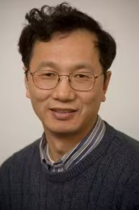
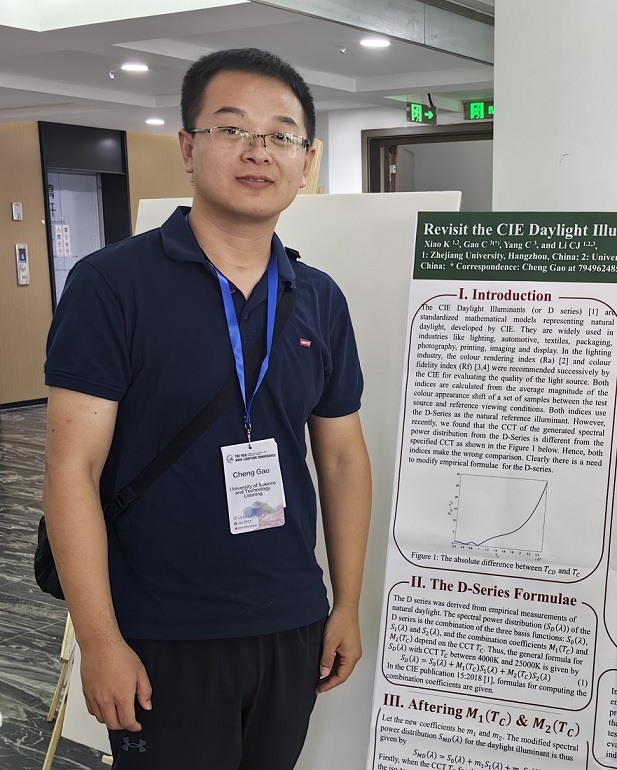
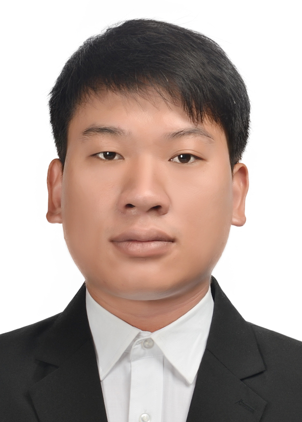
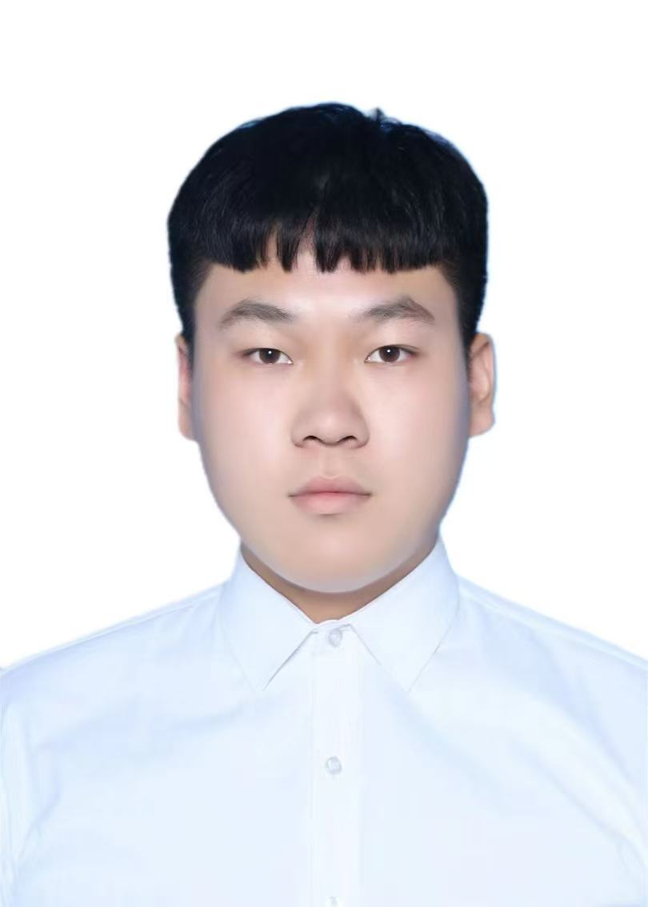
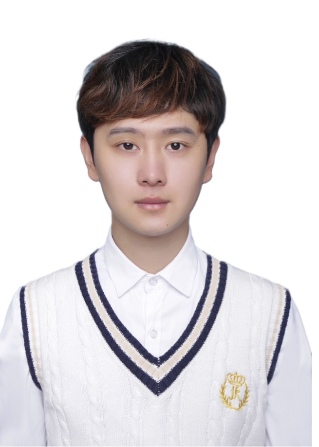
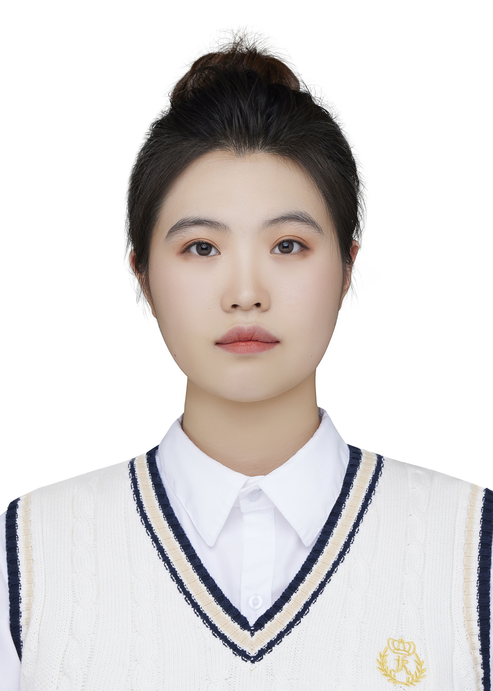
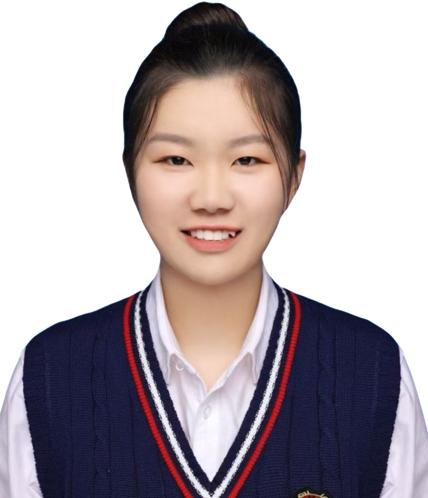
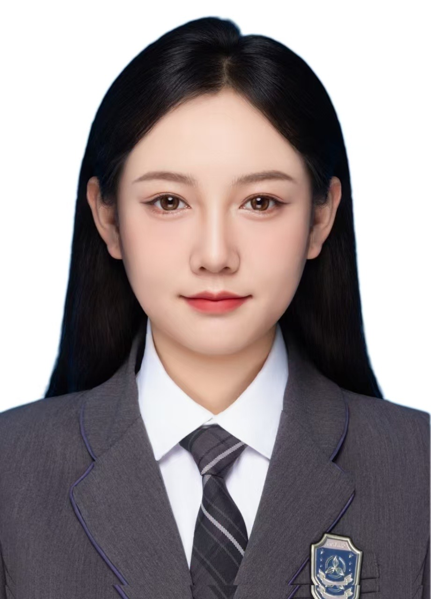
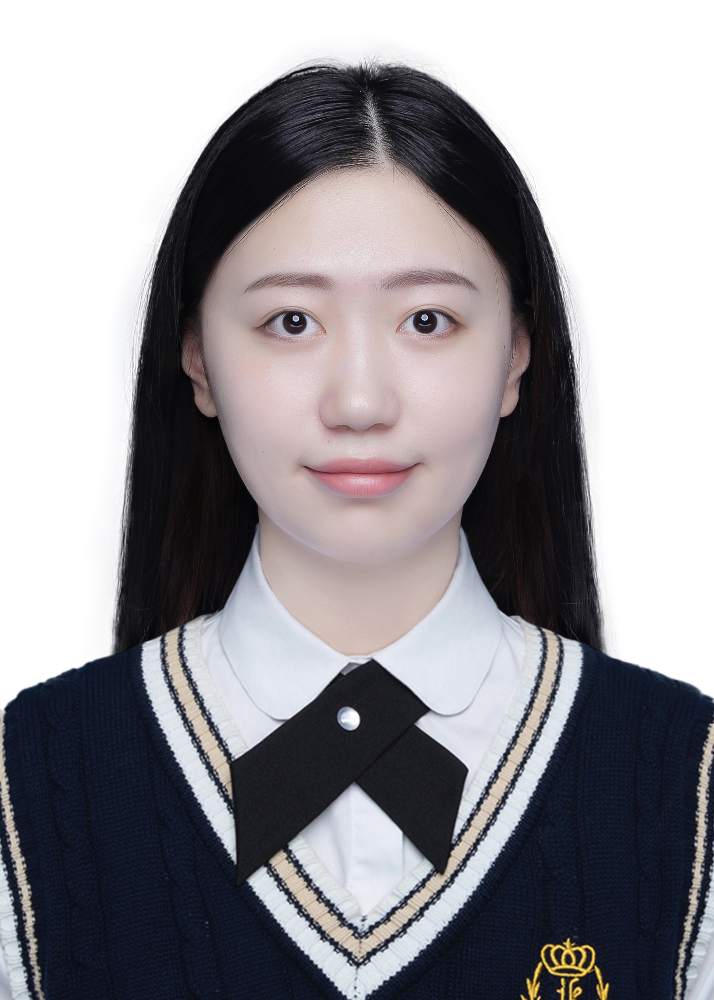
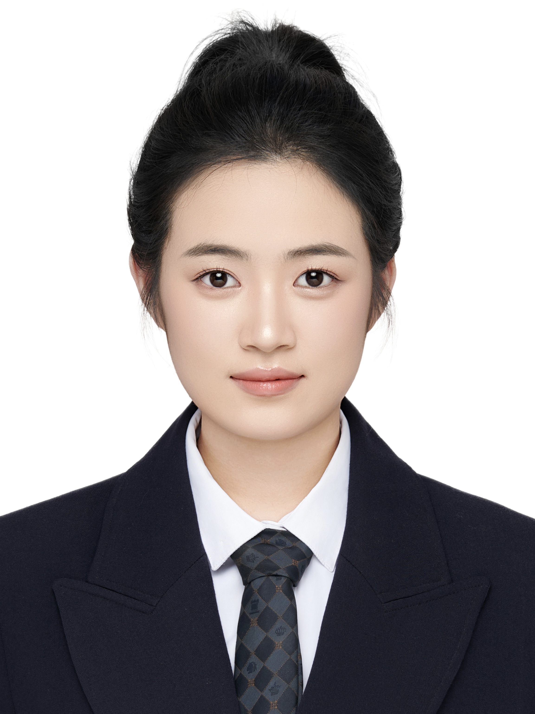

博士生导师，主要从事颜色与视觉科学及多媒体间彩色图像准确再现研究，承担和完成多项国家自然科学基金和国际合作项目，在国际杂志和学术会议发表150多篇研究论文, 其中有80多篇被SCI检索，是国际照明委员会第一和第八分部多个专家组成员；2000年入选中国科学院《百人计划》，2010被国立台湾科技大学聘为专案教授级专家；2011年获欧联盟Erasmus Mundus讲学奖；2012年入选《浙江省千人计划》。曾任国际照明委员会专家组TC-71，TC1-73,和TC8-11的主席

硕士生导师，主要从事色温计算、中视觉照明、色貌模型等相关研究，现为CIE TC1-102技术委员会成员。主持国家自然科学基金一项、辽宁省科技厅项目一项、辽宁省教育厅项目一项。参与国家自然科学基金一项，辽宁省自然科学基金一项。发表SCI等期刊论文20余篇。

讲师，主要从事色温计算，设备特征化等相关研究。参与国家自然科学基金一项，辽宁省科技厅项目一项。发表SCI检索论文3篇。

研究围绕皮肤光谱反射率的特征分析及其在光学参数预测中的应用展开，通过实测数据揭示特征变化规律，并结合物理模型实现黑色素、氧饱和度的无创反演，为皮肤光学模型优化、光谱重建与真实肤色渲染提供支撑。

主要研究方向为色彩科学与图像处理，重点关注色差评价模型与色差公式优化。目前围绕视觉色差数据开展神经网络辅助的色差公式改良研究，致力于提升传统色差公式在复杂颜色样本中的预测精度与感知一致性。

主要研究方向为色彩科学与图像处理，重点关注肤色色差感知评价与肤色模型优化。目前围绕面部肤色色差数据开展视觉实验、色差公式评价与肤色专用色差模型构建研究，致力于提升现有色差模型在肤色区域中的预测准确性与感知一致性。

主要研究方向为色彩科学与照明计算。目前围绕色温计算、中视觉照明及色貌模型等方向开展研究，重点关注相关理论模型的计算精度、视觉适应机制及其在实际照明评价中的应用，致力于提升颜色表征与照明评价结果的科学性和一致性。

主要研究方向为色彩科学与图像处理，重点关注颜色外观模型与颜色空间优化。目前围绕MCAM2模型开展色调线性问题及特征色色调角优化研究，致力于提升特征色色调线性与颜色空间的感知均匀性。

主要研究方向为光谱压缩与光谱重建，重点关注高维光谱数据的低维表示、同色异谱黑建模以及多光源条件下的光谱重建精度优化。目前围绕光谱压缩模型、色差评价与重建稳定性开展研究，致力于提升现有光谱压缩与重建方法在低存储条件下的重建精度、色差一致性与跨光源适应能力。

主要研究方向为色彩科学与图像处理。目前围绕MCAM1 基于 CIECAM16 框架改进的新一代色貌模型，核心目标是解决 CIECAM16 在色调线性、特征色定位、视觉均匀性上的缺陷，支撑跨媒体、广色域、HDR 颜色准确再现。